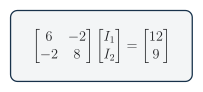
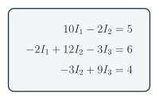

Linear Algebra for Circuits
You will turn node or loop equations into a two- or three-variable system and solve it using elimination, matrices, or software. The method finds several unknown currents or voltages at the same time.
Used in college or university: Linear algebra, numerical methods, circuits, structures, process models, and control. [28, Chs. 9, 12]
Where you see it: A technician can model several currents in a car wiring network at once. A robotics engineer uses the same mathematics for sensor networks, motor currents, and control models.
Class materials
- Teaching slides
- Make a copy of the current student problem set
- TEJ Electronics Quick Reference
- Teacher answers: restricted
A system of equations
Do not force the GUESS method onto a simultaneous system. Use this sequence: define the variables, write the circuit equations, put them in standard or matrix form, solve, and verify by substitution.
Each independent Kirchhoff loop gives one equation. Write every equation in the same variable order:
\[ \begin{aligned} a_{11}x_1 + a_{12}x_2 &= b_1 \\ a_{21}x_1 + a_{22}x_2 &= b_2 \end{aligned} \tag{1}\]

The same system is
\[ \underbrace{ \begin{bmatrix} a_{11} & a_{12} \\ a_{21} & a_{22} \end{bmatrix}}_{A} \underbrace{ \begin{bmatrix} x_1 \\ x_2 \end{bmatrix}}_{\mathbf{x}} = \underbrace{ \begin{bmatrix} b_1 \\ b_2 \end{bmatrix}}_{\mathbf{b}} \tag{2}\]
In compact form:
\[ A\mathbf{x}=\mathbf{b} \tag{3}\]
Solve and check
Use substitution or elimination for a small system. Use a simultaneous-equation or matrix solver for a larger system. Keep the variable order and units consistent, then substitute the answer into the original equations or calculate the residual:
\[ \mathbf{r}=A\mathbf{x}-\mathbf{b} \tag{4}\]
\[ \mathbf{r}\approx\mathbf{0} \tag{5}\]
A large residual can flag a wrong sign, wrong measurement, or wiring fault.
Three unknowns

Worked solutions
On the course calculator, the Casio fx-991ES PLUS C, press MODE, then 5 for EQN. Press 1 for two unknowns or 2 for three unknowns. Enter each coefficient in equation order and press = after every value; after the final coefficient, each additional = displays the next solution. This sequence is verified against the official Casio fx-991ES PLUS C equation guide.
Enter the rows \((10,-4,6)\) and \((-4,12,3)\).
\[ \begin{bmatrix} 10 & -4 \\ -4 & 12 \end{bmatrix} \begin{bmatrix} I_1 \\ I_2 \end{bmatrix} = \begin{bmatrix} 6 \\ 3 \end{bmatrix} \tag{6}\]
Final answers: \(I_1=0.808\,\mathrm{mA}\) and \(I_2=0.519\,\mathrm{mA}\).
Substitution into both original rows gives a residual of approximately zero.
Enter the coefficient rows \((10,-2,0,5)\), \((-2,12,-3,6)\), and \((0,-3,9,4)\). The zeros keep the variable columns aligned.
Final answers: \(I_1=0.657\,\mathrm{mA}\), \(I_2=0.786\,\mathrm{mA}\), and \(I_3=0.706\,\mathrm{mA}\).
Substitute the three currents into all three original rows to check the solution.